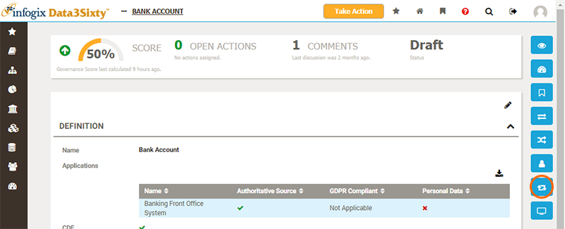
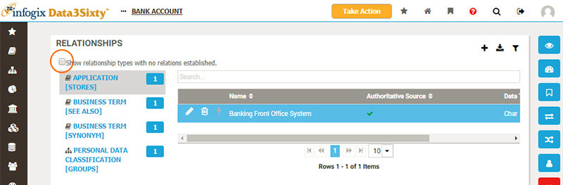
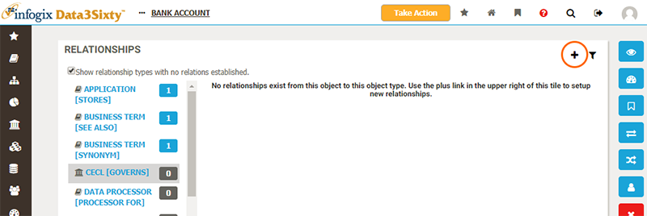
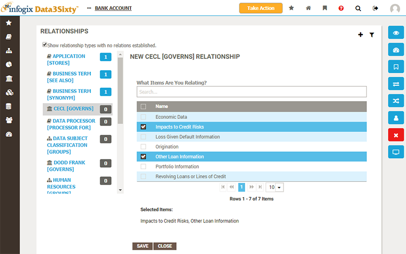

|
|
Defining relationships between assets
In order to understand how business terms relate to applications, reports, processes, policies and each other, you can define relationships between assets. Once these relationships are captured you can then visualize and understand how changes to one asset would impact others.
Relationship Types
Relationships are formed between two assets (the subject and an object) using a Predicate - a term which explains the nature of the relationship. Relationship Types capture a specific type of relationship between two specific types of asset. Examples of common relationship types are:
| Subject | Predicate | Object |
|---|---|---|
| Application | stores | Business Term |
| Business Term | synonym of | Business Term |
| Policy | governs | Business Term |
| Report | contains | Business Term |
| Report | similar | Report |
Relationships are bi-directional, hence the inverse-relationships must also be defined:
| Subject | Predicate | Object |
|---|---|---|
| Business Term | is stored by | Application |
| Business Term | synonym of | Business Term |
| Business Term | is governed by | Policy |
| Business Term | is contained in | Report |
| Report | similar | Report |
Your version of the application will have been configured to provide a set of Relationship Types specific to your own organizations' requirements.
Examining existing relationships
To capture a relationship between two assets, navigate to the page for the subject asset and choose the Relations view from the right of the screen:

The Relations view shows all of the available Relationship Types on the left, listing the type of the object asset type to be associated with, along with the Predicate.
For a selected Relationship Type, a list of all relationships of that type is then listed on the right:

From this view you can browse the existing relationships created for the subject asset. You can uncheck the option 'Show relationship types with no relations estalished' to remove unused relationship types from the list on the left:

Creating new relationships
To create a new relationship, you must first select the appropriate Relationship Type from the list on the left. You can then click the Add button in the top-right:

Note: You should ensure that the option 'Show relationship types with no relations estalished' is checked, to show all of the relationship types available for the subject asset. If you don't see the relationship type you need, you should contact a system administrator and request that they create it for you. If you have administration permissions, you can create a new Relationship Type yourself. Please refer to the help topic Establishing relationships for more details.
You will be prompted to choose assets of the appropriate type to form a relationship to:
